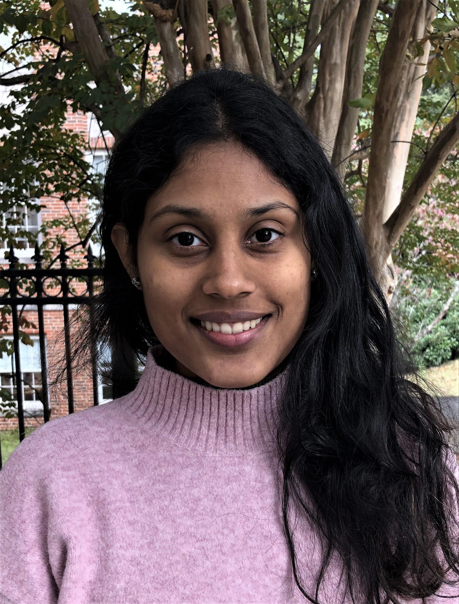

Shreya Arya
Hans Rademacher Instructor of Mathematics
University of Pennsylvania
smarya@upenn.edu
Office: DRL 3N8D
Welcome to my homepage. I recently obtained my Ph.D. in Mathematics at Duke University with Sayan Mukherjee and Ezra Miller.
I am interested in geometry, topology and category theory and its applications to statistics, computer science and mathematical physics.
You can find my thesis here. It was awarded the Rudin Prize for Outstanding PhD Dissertation at Duke University.
Research
Kan approximations of the persistent homology transform
2025
abstract
arXiv
We develop a functorial framework for approximating the persistent homology transform using Kan extensions.
Learning with frustration: Torsor CNNs
NeurIPS Workshop on Symmetry and Geometry in Neural Representations, 2025
abstract
arXiv
We introduce Torsor CNNs, a framework connecting discrete gauge theory to group synchronization for learning on graphs with local symmetries.
Decomposing the persistent homology transform of star-shaped objects
To appear in La Matematica, 2024
abstract
arXiv
We provide a decomposition theorem for the persistent homology transform of star-shaped objects.
The Gromov-Wasserstein distance between spheres
Foundations of Computational Mathematics, 2024
abstract
arXiv
We compute the Gromov-Wasserstein distance between spheres of different dimensions.
A sheaf-theoretic construction of shape space
Foundations of Computational Mathematics, 2024
abstract
arXiv
We construct shape space using sheaf theory, providing a categorical framework for understanding spaces of geometric objects and their deformations.
Fuzzy type theory
2023
abstract
We develop a type theory with semantics in categories enriched in categories of fuzzy sets, in analogy with Martin-Löf type theory and its interpretation in categories.
Dimensionality reduction for k-distance applied to persistent homology
Journal of Applied and Computational Topology, 2021 · SoCG 2020
abstract
paper
We show that dimensionality reduction via random projections preserves k-distance and thus persistent homology.
Recent Talks & Upcoming Travel
Upcoming
May 2026
Dec 2025
NeurIPS, San Diego
Recent
March 2025
AMS Southeastern Sectional, Clemson
Feb 2025
Geometry-Topology Seminar, Penn
Oct 2024
AMS Eastern Sectional, Albany
Nov 2023
Math Physics Seminar, UC Boulder
Oct 2023
AATRN Seminar (video)
April 2023
Statistics of Shapes and Geometry of Shape Spaces, MPI Leipzig
Teaching
 Penn
Penn| Fall 2025 | MATH 5000 | Geometry-Topology | Instructor |
| Spring 2025 | MATH 2400 | Linear Algebra & Differential Equations | Instructor |
| Fall 2024 | MATH 3200 | Computational Methods in Mathematics | Instructor |
| Fall 2024 | MATH 1410 | Multivariable Calculus | Instructor |
Duke
| Spring 2024 | MATH 202 | Multivariable Calculus for Economists | TA |
| Spring 2022 | MATH 112L | Calculus II | Instructor |
| Summer 2022 | MATH 219 | Multivariable Calculus | TA |
| Spring 2021 | MATH 112L | Calculus II | Instructor |
| Summer 2021 | MATH 230 | Probability | TA |
| Summer 2020 | MATH 260 | Python Programming in Math | TA |
| Fall 2019 | MATH 111L | Laboratory Calculus I | TA |
Service
| Fall 2026 | Co-organizer, Trimester Program on Geometric Statistics, Hausdorff Institute Bonn | |
| 2021–2023 | Co-director, SWiM at Duke (with I. Daubechies, D. Buck) | |
| 2022–2023 | Co-president, AWM Chapter at Duke |
Other
Identity Types in Context, guest post on the n-Category Café with G. Coraglia.